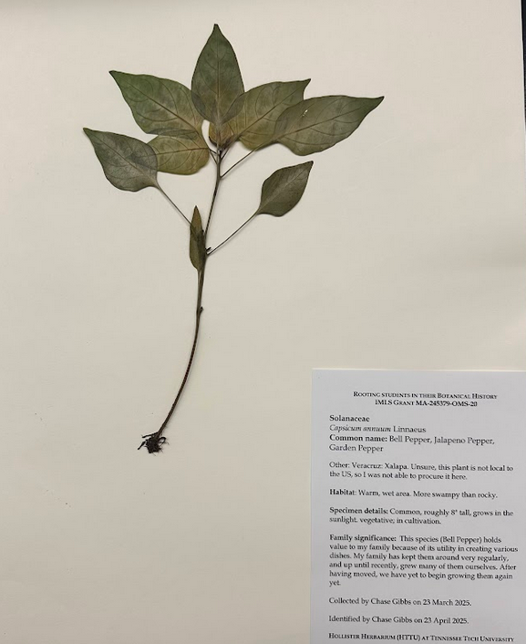
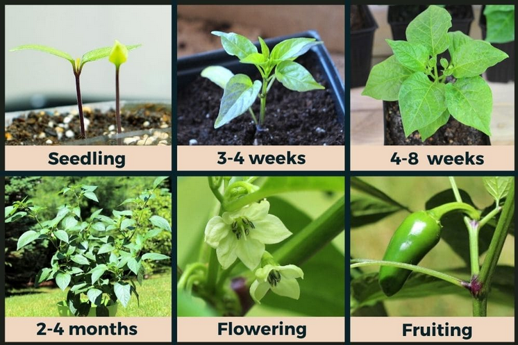

This application was designed for S25 BIOL2310 Plant Project in Lab Section 101


image source: https://peppergeek.com/jalapeno-plant-stages/
The Bell Pepper
Solanaccae: Capsicum Annuum Linnaeus
Common Name: Bell Pepper, Jalapeno Pepper, Garden Pepper
Location: Xalapa, Veracruz
Habitat: Warm, wet area. More swampy than rocky
Specimen Details: Common, roughly 8" tall, grows in sunlight. Vegtative, in cultivation
Commercial Value: Positive
Physiology: Seedling, Adolescent, Growth, Maturation, Flowering, Fruiting (Pictured to the Left)